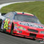

Web Portfolio Graphics
Evaluation of Web Graphics
Website I Evaluated: NASCAR.com
The purpose of the graphics on this page are to add on to the links to the latest featured headline articles.
- Graphics fit in very well with the purpose and style of the page.
- The page loads very quickly, even with the many graphics featured on the page.
- Each graphic serves as an elaboration to what the article will be about.
- The featured graphics are not bright or obnoxious, they simply add on to the article's description.
- Some graphics have a few words included in the image to help summarize the preview.
- Every article link has a text description as well as a graphic.
- The graphics that do use text have a very good amout of contrast, making them very easy to read.
Web Photo Album
Secondary paint scheme driven by Jeff Gordon in 2015, his final fulltime season.
Alternate paint scheme driven by Jeff Gordon in 2014.
Primary paint scheme driven by Jeff Gordon from 2001 until 2008.

Primary paint scheme driven by Jeff Gordon from his first race in 1992 until 2000.
Custom Graphic
.jpg){kind=link}
.jpg){kind=link}
.jpg){kind=link}
.jpg){kind=link}
.jpg){kind=link}